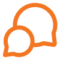

🧑🤝🧑
67% (4 out of 6) of participants showed a strong preference for a community-oriented app
APP DESIGN · SPRING 2025
🔍 AI-powered mobile application designed to help users explore and discover places that fits their interests

This individual research project, completed for UCLA’s “Digital Humanities 110” course, was awarded an A grade for its depth of research and creative visualization.
Placie is a moble app that aimed to create a connected environment for users to find and explore places they are interested in through a personalized places recommendation feature. It allows people to explore restaurants, cafes, and tourist attractions easily and effectively through gamified interfaces.

I conducted semi-structured interviews with 6 participants to understand their thoughts on current mobile apps for finding places to visit. This method allowed me to ask follow-up questions based on users' responses.
Through the interviews, I was able to gather meaningful qualitative insights that guided how I should approach solving the problem.
67% (4 out of 6) of participants showed a strong preference for a community-oriented app
83% (5 out of 6) of participants wanted an app with integrated features
67% (4 out of 6) of users expressed high demand for AI recommendation feature

The current place-finding apps provide recommendations in silos. Food, cafés, and attractions are separated, forcing users to switch between platforms. This fragmented process frustrates users, wastes time, and prevents them from having a seamless discovery experience. There is a clear need for an integrated, personalized recommendation app that combines all categories, enabling users to find places more quickly.
Design alternatives for users who are reluctant to post reviews publicly but still want to participate?
Allow users to leave both public and private review.
Add AI algorytm so that users feel more attatched and recommend more personalized places.
Adding a leaderboard page where users can compare rankings with their friends, based on the XPs they earned.
Structuring this low fidelity wireframes enabled me to explore between visual elements, usability, and user flow, which led me to narrow down into the optimized screens.


During the usability test with 6 participants, 100% were able to complete the main goal flow, demonstrating overall task success. However, a minor system error occurred when participants asked about what AI button is, which slowed downed the task completion time.
Despite this, participants provided valuable qualitative feedback.
1. 4 out of 6 participants (67%) suggested choosing between the diary and review features to reduce cognitive load.
2. 2 participants (33%) suggested to make AI button more appealing, which is the key feature of this app.
Overall, participants highlighted Plaice’s clean interface and intuitive navigation while also identifying opportunities for improvement in review-related and AI pages.
Reflecting the user test results, during the iteration, I realized that using the wording ‘review’ instead of ‘diary’ in the navigation scheme was more appropriate, identified gaps in the flow leading users to the AI feature, changed the background map, and improved the UI of the buttons by removing stroks and using neutral colors.


During the usability test with 6 participants who participated in the first user test, 100% were able to complete the main goal flow, demonstrating overall task success.

· If I could collaborate with developers, I would incorporate algorithm into an app to enhance recommendation feature.
· As someone who closely observed my peers’ pain points, I found it meaningful to directly interview them, incorporate their feedback into the app, and ultimately work toward addressing their challenges.